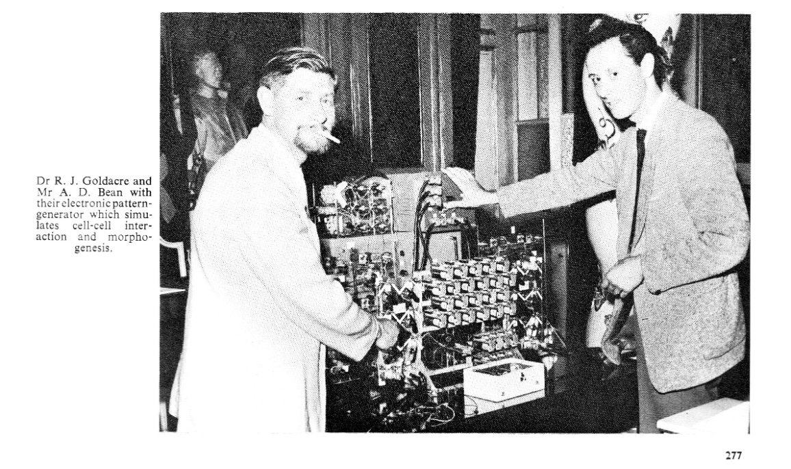
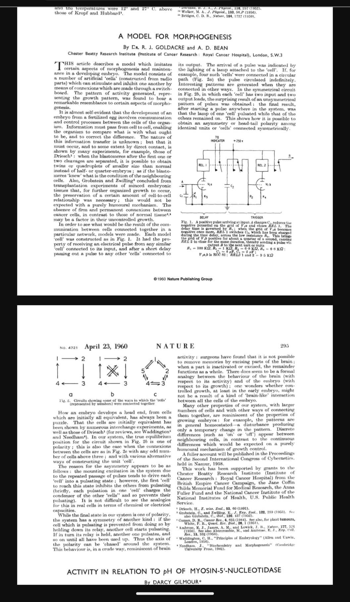
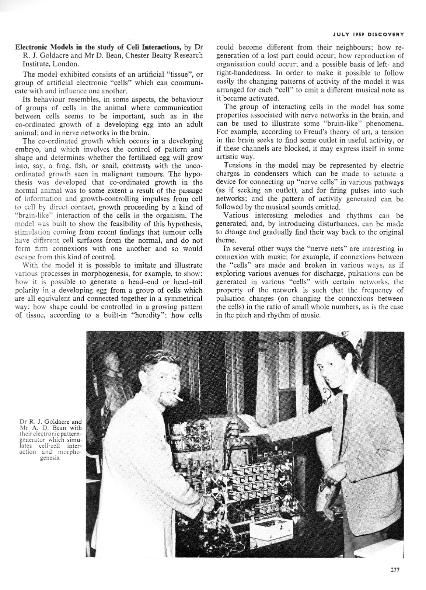

Press the start button below to hear music; move the sliders to change the sounds. This is a browser instrument, aiming to emulate the Goldacre–Bean machine from the late 1950s. The original device was designed as a computational model for intracellular communication, in the context of embryology research, and was exhibited at the Royal Society in 1959 (see below). But its ability to generate emergent patterns - from interacting pulse-generating “cells” - was also used by its inventors to make music. The model below is faithful in structure rather than in exact circuitry: a 4×4 network, threshold-like firing, local inhibition, optional long-range nerve-net links, and evolving rhythmic themes. A longer explanation is given below. This webpage is a clumsy work in progress for private consumption in moderate doses only.

Images from period documentation and publication pages relating to the Goldacre–Bean morphogenesis model.


The Goldacre Bean device was an experimental electronic system built in the late 1950s by the British biologists Dr Reginald J. Goldacre and Mr Derek Bean to study morphogenesis—the process by which biological patterns form in living organisms. Although designed primarily as a biological model, it also produced sound, and contemporary accounts mention that the system could generate “melodies and rhythms.” In retrospect, it can be understood as an early example of a network of interacting electronic oscillators, and therefore sits at an interesting intersection of biological modelling, early cybernetics, analogue computing, and generative music.
Goldacre’s work was part of a broader mid-20th-century attempt to understand development and pattern formation in biological systems using cybernetic and electronic models. Researchers in this period often constructed physical circuits that behaved analogously to biological processes. The aim was not computation in the modern digital sense, but dynamic simulation: building electronic systems whose behaviour resembled living systems.
Goldacre’s device appears to have been inspired by ideas about excitable media and interacting cells, similar in spirit to models later associated with Alan Turing’s reaction–diffusion theory of morphogenesis. In such models, patterns arise when local interactions between elements—cells or chemical concentrations—produce waves, oscillations, or stable spatial structures.
The machine was described in a paper by Goldacre in Nature, where he referred to a network of electronic “cells.” Each cell represented an element in a simplified tissue model. The machine itself seems to have consisted of a grid of modules connected by patch leads, forming a configurable network.
The available descriptions suggest that the system consisted of a number of identical electronic units—referred to as cells or “beans.” Each unit behaved somewhat like an excitable biological cell.
Technically, each cell likely contained:
The capacitor represented stored “tension” or activation within the cell. As charge accumulated, the cell approached a threshold. When the threshold was reached, the cell discharged or fired, sending pulses to other cells in the network.
Connections between cells could be inhibitory or excitatory. For example, a firing cell might delay or accelerate the activity of its neighbours. By wiring cells together in different patterns, the machine could simulate various biological tissues or networks.
Importantly, the cells were not clocked by a central timing system. Instead, each cell had its own natural charging time determined by its electrical components. The system therefore behaved as a network of loosely coupled oscillators, each influencing the timing of the others.
Because each cell’s timing depended on both its internal state and the pulses arriving from other cells, the network could produce complex behaviour:
Goldacre noted that the frequencies of oscillation in the system often settled into simple whole-number ratios, a typical property of coupled oscillators. In biological terms, such behaviour could represent coordinated activity across tissues.
These dynamics also meant that the machine produced temporal patterns—sequences of pulses occurring in different cells at different times.
At some point, Goldacre and colleagues arranged for the activity of the cells to be audible. Contemporary accounts state that each cell emitted a musical note when it became active. This implies that the firing of a cell triggered some form of audio output, possibly by:
When the network ran, the pulses from different cells occurred at varying times and frequencies. The result was a sequence of tones reflecting the collective dynamics of the network.
Observers reported that the system produced melodies and rhythms that evolved over time. This makes sense given the behaviour of coupled oscillators: clusters of cells may synchronise temporarily, creating repeating motifs, before the pattern shifts as interactions change.
In other words, the music was not composed deliberately but emerged from the network’s dynamics.
The Goldacre device belongs to a tradition of analogue computing, where physical systems were built to model equations or processes directly. Unlike digital computers, such machines did not perform symbolic computation but instead embodied the system being studied.
Networks of interacting units were a common idea in early cybernetics and neuroscience-inspired computing. Devices like the Goldacre machine can be seen as distant relatives of later concepts such as:
However, unlike later digital implementations, Goldacre’s machine was purely physical and continuous.
From the perspective of music history, the Goldacre device is intriguing because it predates many later developments in algorithmic and generative composition.
During the late 1950s and early 1960s, several strands of experimental music were emerging:
But Goldacre’s machine differs from these traditions. Instead of generating music through formal rules or programmed algorithms, it produced sound through the spontaneous behaviour of a physical dynamical system.
In that sense it resembles later developments such as:
The device can therefore be viewed as an early example of cybernetic music, where sound arises from the behaviour of a self-organising system.
Although the Goldacre machine was built for biological research rather than musical experimentation, it illustrates a fascinating moment in mid-20th-century science when electronic circuits were used to explore life-like behaviour.
Its musical output appears to have been a by-product of the same properties that made the model scientifically interesting: oscillation, coupling, and self-organisation. Today these ideas are recognised as fundamental features of many complex systems.
Seen in hindsight, the device stands at a crossroads between analogue computing, biological modelling, and generative sound, anticipating later explorations of emergent behaviour in both science and art.